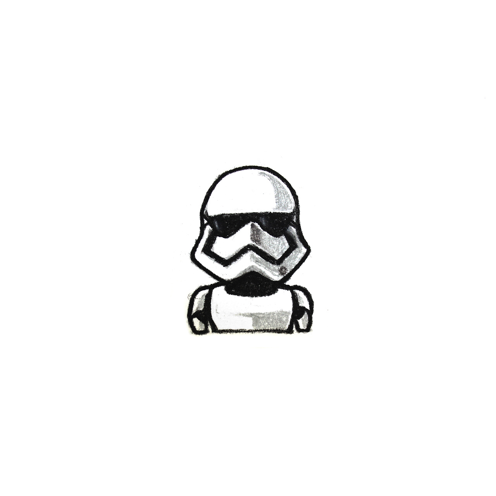
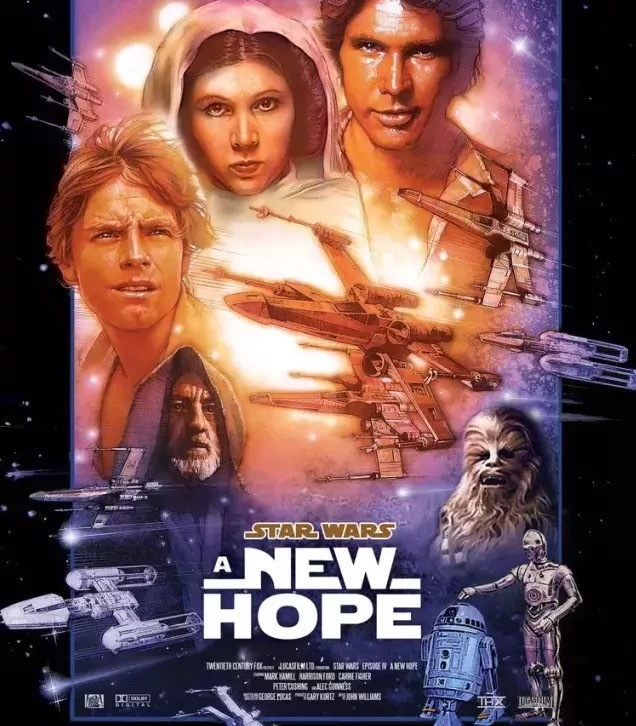
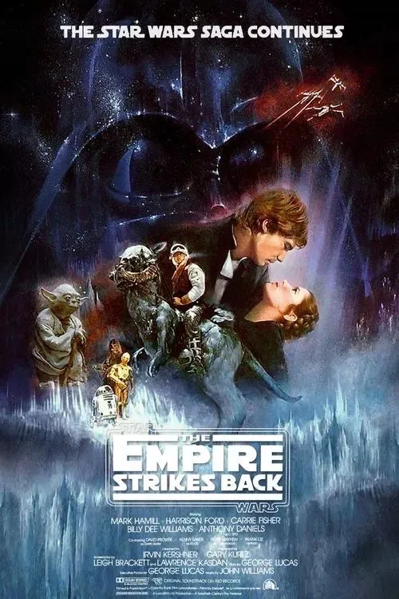
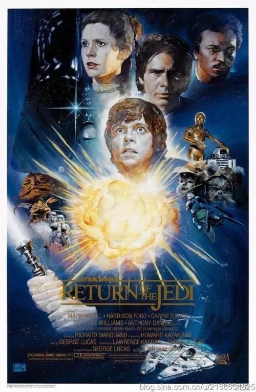

|  | 上映时间 | 演职人员 | 剧情简介 |
|---|---|---|---|
《星球大战4：新希望》  |
1977年 | 角色：卢克·天行者Luke Skywalker 演员：马克·哈米尔 角色：莱娅·奥加纳·索罗Leia Organa Solo 演员：凯丽·费雪 角色：汉·索洛Han Solo 演员：哈里森·福特 角色：欧比旺·肯诺比Obi-Wan Kenobi 演员：亚利克·基尼斯 |
“在这个时候，内战连连，义军同盟的飞船从秘密基地与邪恶的帝国军队进行斗争并取得了初步的成效。在这场战争中，义军的秘密间谍窃取了帝国终极武器——死星的设计图。死星是一座太空站，其威力足以摧毁一个星球。在帝国军队的追捕下，莱娅公主急于将设计图护送回航用来解救她的人民...” 在侠盗一号小队用性命换来了死星的内部设计图之后，义军同盟的领导人，银河帝国参议院成员莱娅.奥加纳公主顺利从斯卡里夫脱身，准备回到奥德朗。可是达斯.维德穷追不舍，公主终究还是落入这个西斯尊主的手中。在被抓获之前，莱娅将设计图拷贝到自己的随身机器人R2-D2身上，并让C3PO和它一起乘坐逃生舱离开。两个机器人最终迫降在塔图因星球的荒漠上并被机器人贩子抓获。在飞船上下寻找图纸未果的维德也意识到莱娅已经将其秘密转移。 卢克.天行者是一个年纪轻轻的男孩，从小便被寄养在他的叔叔欧文.拉尔斯家生活，从事着经营湿气农场的生意。卢克对自己的父亲一无所知，因为叔叔和婶婶总是对他刻意隐瞒。这一天，叔侄二人准备购买两个机器人以帮助他们进行农场的劳作，阴差阳错间，两人与落难于此的R2和C3PO相遇并买下了它们。在修理R2的时候，卢克得知它们曾效力于义军同盟，并看到了一部分莱娅公主向欧比旺.克诺比发出的求救信号。这个年轻的天行者当即意识到此事可能与本.克诺比有关——本是一个隐居在塔图因沙漠中的古怪老头，和卢克有过些许交集。随后卢克向欧文询问本的信息，可欧文依旧闭口不谈。 当晚，R2私自出走前去寻找欧比旺，担心它安全的卢克和C3PO在第二天一早便出发跟随。不料，二人遭到了沙人的袭击。在千钧一发之际，本.克诺比现身击退了袭击者并找到了落单的R2。本随即将三人带到了自己的家里并承认了自己就是欧比旺，一个曾经的绝地大师，而卢克也在欧比旺的口中得知了自己的父亲安纳金.天行者的信息：他曾是一个杰出的绝地武士，银河系最出色的飞行员，但却被欧比旺另一个邪恶的徒弟达斯.维德谋害。在这里欧比旺显然没有告诉卢克真相，因为以后者目前的状态还无法承受如此沉重的事实。老欧比旺在这个年轻人身上发现了和安纳金当年一样惊人的原力天赋，并意图把他训练成绝地武士，却遭到了卢克的拒绝。回到家中的卢克发现叔叔和婶婶已经被追踪而来的帝国部队迫害致死，悲痛至极的他同意了和欧比旺一同保护设计图前往奥德朗星球的请求。 欧比旺和卢克在莫斯埃斯利的一个酒吧里找到了汉.索罗和伍基人楚巴卡，二人是远近闻名的飞行专家和走私犯，他们驾驶的千年隼号飞船能够完成任何看似不可能的任务。在商谈好价格之后，汉和楚巴卡便载着卢克等人出发前往奥德朗。欧比旺趁机对卢克进行了原力的训练，也让后者第一次接触到了这个曾经未知的力量。与此同时，达斯.维德和塔金总督用了所有的方法也没能让莱娅公主说出设计图的下落以及义军同盟的位置。因此，塔金下令把公主的故乡奥德朗星作为死星的第一个目标。随着一声令下，奥德朗在莱娅的面前被夷为灰烬。 不久之后，卢克等人抵达了奥德朗所在的位置，惊诧于这个庞大的星球消失不见的众人与死星撞了个满怀。千年隼号被这个巨型空间站强大的引力吸了进去，为了让他们有机会脱身，欧比旺独自前去关闭引力机，而达斯.维德也感知到自己曾经的导师来到了死星。留守原地的卢克无意间得知莱娅公主也被关押在此，于是他和汉以及楚巴卡前去营救。在一阵激战过后，莱娅公主逃出生天，可欧比旺却为了掩护众人撤退而故意死在了维德的剑下，化为了绝地英灵。千年隼号护送着莱娅以及设计图来到了雅汶四号卫星，即义军同盟的秘密基地。同盟的飞行编队当即做好了战斗准备，而卢克也亲自驾驶战机参与其中。而帝国这边，塔金知晓了义军的具体位置并将死星驾临雅汶四号卫星，随着义军战机的到来，维德亲自驾机出动并让义军损失惨重。卢克凭借原力的指引以及精湛的飞行技术孤军深入，和他的父亲当年一样，并在汉.索罗关键时刻的帮助下成功炸毁死星，塔金总督也在爆炸中殒命。 卢克和汉为义军同盟赢得了关键性的胜利，二人也受到了莱娅公主的嘉奖，可是等待着他们以及义军同盟的危险还有很多，他们前方的路还很长...
|
《星球大战5：帝国反击战》  |
1980年 | 角色：卢克·天行者Luke Skywalker 演员：马克·哈米尔 角色：莱娅·奥加纳·索罗Leia Organa Solo 演员：凯丽·费雪 角色：汉·索洛Han Solo 演员：哈里森·福特 角色：达斯·维德Darth Vader 演员：大卫·鲍罗斯 |
“对于义军同盟来说，这是一个黑暗的时刻。虽然死星已经被摧毁，但是帝国部队找出了他们的秘密基地并在银河中苦苦追赶。为了躲避丧心病狂的帝国军队，一队义军战士在卢克.天行者的带领下在遥远的霍斯星系的冰天雪地中建立了一个新的基地。邪恶的西斯尊主达斯.维德为了找到年轻的天行者而派出了数千个探测机器人，其魔掌遍布整个银河系...” 在之前的雅汶战役中，达斯.维德感应到了卢克.天行者身上强大的原力，于是他发誓要找到这个年轻人，同时一举歼灭义军同盟的基地。帝国派出的探测机器人散布在银河系的各个角落，其中一个便落在了霍斯星系的茫茫冰原之上，引起了正在此地侦查的卢克的注意。为了搞清楚情况，年轻的天行者冒险前去察看，却遭到了雪怪的攻击。万分紧急之下，卢克利用原力成功脱险，却也被困在冰原之中。在失去意识之前，欧比旺.克诺比的绝地英灵出现并告诉他前往达戈巴星系寻找尤达大师完成绝地武士的训练。 由于没能按时还债，汉.索罗遭到了塔图因星球地头蛇贾巴的悬赏，而之前与赏金猎人的遭遇更是让他坚定了离开义军同盟的决心。莱娅公主对汉的离去表示惋惜，但却拒绝承认她已经对这个不羁浪子暗生情愫。义军工作人员向公主报告了卢克失踪的消息，汉得知后亲自前去寻找，并在茫茫雪海中找到了奄奄一息的天行者。然而，帝国探测机器人终究还是找到了义军基地并报告给达斯.维德，后者旋即派出了军队。面对此等危机的情况，莱娅公主当机立断进行转移。义军的飞行编队和帝国部队进行了惨烈的战斗，以掩护运输机撤离，可地面部队却遭遇了维德的秘密武器AT-AT机器人，一时间义军损伤惨重。卢克驾驶战机参与战斗并挽回了些许局面，使得义军运输机能够成功撤离。完成了任务的天行者决定遵照欧比旺的指引前往达戈巴寻找尤达大师。与此同时，莱娅在和汉.索罗等人在维德攻入基地前乘千年隼号逃脱，可是光速系统的受损使得他们无法逃脱帝国舰队的追捕，关键时刻，汉急中生智，利用小行星带顺利摆脱了一众危险。计划落空的维德前去会见西斯大帝达斯.西迪厄斯，后者告诉了他卢克是安纳金.天行者之子的事实，两人决定要将卢克引入原力的黑暗面，因为这个年轻人身上有着和当年的安纳金一样惊人的力量... 卢克和R2来到了阴森潮湿的达戈巴并找到了尤达，但是后者并不愿意训练他，原因是这个年轻人身上有着难以名状的恐惧和愤怒，正如他的父亲安纳金之前一样。在欧比旺的一再劝说和坚持下，尤达大师最终同意训练卢克。在艰苦的练习当中，年轻的天行者逐渐学会了如何用一颗平静的心去使用和驾驭原力，并得知愤怒和恐惧只会导致自己堕入黑暗面。拥有了利用原力预知未来的能力的卢克看到了汉和莱娅在不久的将来会遭遇到巨大的危险，担心朋友安危的天行者决定不顾尤达和欧比旺的劝说而终止训练，前去解救莱娅等人。 逃离帝国军队追击的汉等人决定前往贝斯平星找兰多.卡尔瑞辛，千年隼号便是汉从兰多的手上所赢得的，可他们不知道自己已经被维德雇佣的赏金猎人波巴.费特盯上。波巴是共和国时期臭名昭著的詹戈.费特之子，在目睹父亲被温杜大师杀死之后，小费特逐渐成长为整个银河系最令人闻风丧胆的赏金猎人。众人来到贝斯卡星并受到兰多的热情款待，但莱娅却感到这里危机四伏。果不其然，汉等人在这里遇到了早就埋伏好的维德和波巴。维德准备把莱娅当作诱捕卢克的诱饵，而方法便是将天行者引到碳化冷冻机里。可是兰多的冷冻设备从来没有对活人使用过，于是维德决定将汉作为试验品。临刑前，莱娅终于向汉表露了爱意，后者的内心终于在恐惧之中多出了一丝幸福。随着冷冻仪的运作，汉变成了一堵人形壁画，但却保留着生命体征。维德将索罗交给了波巴处理，而他自己则等待着卢克的到来。 卢克的飞船降落在了兰多的基地，他旋即遭到了波巴和帝国士兵的袭击。天行者边应战边追击，一路杀进了冷冻室。与此同时，兰多幡然醒悟决定帮助莱娅等人，当他们来到东部平台时却发现波巴已经带着汉先行一步。如同宿命一般，卢克终于要单独面对达斯.维德。接受了尤达训练的卢克技艺成熟了许多，可依旧不是老辣的维德的对手。西斯尊主一步步占到上风并砍断了卢克的右手。被逼入死角的卢克誓死不肯妥协，但维德却告诉了他那个惊人的事实：他就是安纳金.天行者，也就是卢克的亲生父亲。年轻的绝地学徒终究还是了解到了自己的身世，而维德也在诱惑他加入黑暗面，父子二人一起统治银河帝国。在关键时刻，卢克并没有忘记自己作为绝地武士的信条，他拒绝向西斯屈服并跳下了平台，只留得孤身一人的维德。
|
《星球大战6：绝地归来》  |
1983年 | 角色：卢克·天行者Luke Skywalker 演员：马克·哈米尔 角色：莱娅·奥加纳·索罗Leia Organa Solo 演员：凯丽·费雪 角色：汉·索洛Han Solo 演员：哈里森·福特 角色：达斯·维德Darth Vader 演员：大卫·鲍罗斯 |
“卢克.天行者回到塔图因星，试图从当地恶霸贾巴手中救回自己的老友汉.索罗。与此同时，银河帝国正在秘密建造新的战斗基地，其杀伤力比死星更加强大。这个基地一旦完成，为自由而奋战的义军同盟势必惨遭歼灭...” 帝国对于在雅汶战役中死星被炸毁的事情耿耿于怀，于是达斯.西迪厄斯下令建造更加恐怖的武器：死星二号，而达斯.维德也亲临现场监督施工。西斯大帝给了这些帝国科学家难以名状的巨大压力，可他们也只能屈从于西迪厄斯的骇人权力。在另一边，波巴.费特将被碳化冷冻的汉.索罗卖给了塔图因的地头蛇贾巴，后者则非常喜爱这个人形壁画。R2-D2和C3PO来到贾巴的老巢并为其捎来了卢克的口信，即用这两个机器人交换索罗。阴险狡诈的贾巴强行扣押了R2和C3PO，却拒绝交出汉，局势一度十分紧张。就在这时，两个赏金猎人押着楚巴卡突然到来，令这个无恶不作的地头蛇惊喜万分。原来，赏金猎人是莱娅和兰多假扮的，二人此行的目的是秘密潜入解救索罗船长。被解冻之后的汉由于后遗症暂时失去了视力，然而当他还沉浸在与爱人重逢的喜悦中时，贾巴的手下突然出现并俘虏了他们，莱娅公主也成为了阶下囚。 卢克.天行者亲自前来谈判，却中了贾巴的奸计。一行人被押送到了刑场准备成为沙虫的腹中餐。就在关键时候，卢克和R2以及兰多里应外合奇袭了贾巴的手下，这一切都在年轻的天行者的计划之中。波巴. 费特前来迎战，却也双拳难敌四手而掉进了沙虫的嘴里，莱娅也趁乱勒死了贾巴，终结了这个大魔头罪恶的一生。脱离危险的众人和义军同盟的舰队汇合，而卢克再次踏上了单独的旅程，他要返回达戈巴星完成训练。 达斯.西迪厄斯驾临死星二号并与维德会面，诡计多端的西斯大帝感知到卢克已经变得越来越强大，想要年轻的天行者转向黑暗面，就必须要维德和西迪厄斯合作才可以。于是，又一个针对这个天赋异禀的绝地武士的阴谋诞生了... 卢克千里迢迢赶回了达戈巴星，可此时尤达由于年岁的增长已经时日无多。曾经的绝地大师卧在病榻，向自己的学徒诉说着最后的话语，他告诫卢克，等自己死后他就是最后一个绝地武士，而绝地的技艺需要被传承下去。同时，要想真正成为合格的绝地，卢克就必须再次面对达斯.维德，也就是他的亲生父亲——安纳金.天行者。说完这些，尤达大师闭上了双眼回归了原力。黯然神伤的天行者正准备离开，却碰上了欧比旺的绝地英灵，后者告诉了他又一个惊人的事实：莱娅是他的亲生妹妹。当年帕德梅.阿米达拉秘密生下的两个婴儿里，一个是卢克，而另一个便是莱娅。这也就说明，流着天行者家族血液的公主也拥有驾驭原力的天赋。震惊之余，卢克又想到了自己的父亲，他认为维德的心中还有着一丝善念，可欧比旺却认为他已经成为了一个冷酷无情的杀戮机器，而卢克必须杀死这个西斯尊主才能为义军同盟甚至昔日的共和国带来希望。 义军截获了帝国正在恩多附近建造死星二号的消息，同时也得知了西迪厄斯也在那个空间基地中，而这正是一个一举歼灭敌国势力并光复共和国的大好时机。联盟总部随机制定了周密的作战计划，兰多率领义军战机从正面进攻，卢克、莱娅和汉等人则秘密潜入恩多的帝国基地解除死星二号的防护罩，帮助兰多炸毁这个巨型空间站。计划开始有条不紊地实施，卢克一行人驾驶着一辆帝国运输机来到了恩多星，但却因为过时的口令密码而引起了维德的注意，与此同时，卢克和自己的父亲也通过原力感应到了彼此。飞船降落之后，义军小队遭到了帝国部队的追击，幸得当地土著人的帮助而化险为夷。C3PO也用自己掌握六百万种语言的能力让莱娅等人赢得了土著的信任。晚些时候，卢克找到莱娅并告诉了她真相，后者一时间难以接受。年轻的天行者认为自己再待下去会拖累义军同盟的行动，他必须要亲自前往死星二号面对西斯大帝以及他们的父亲达斯.维德。 不顾亲生妹妹的劝阻，卢克.天行者只身前往帝国空间站并以诈降的名义被俘，在这里他又一次见到了维德。相信自己的父亲还有一丝善念的卢克企图用言语感化面前的西斯尊主，可维德却执意带着他去面见西迪厄斯。面对令人毛骨悚然的西斯大帝，卢克感受到了黑暗原力的恐怖。西迪厄斯勒令卢克与维德决斗，而胜者则会留在他身边继续帝国的事业。在那一刻，卢克明白了皇帝的阴谋：他希望自己杀掉父亲并成为西迪厄斯的新奴仆。无心恋战的天行者并没有主动对维德采取攻势，而是采用了尤达和欧比旺传授给他的技艺进行防守，因为他始终没有放弃将父亲拉回光明面。维德意识到自己的儿子不肯轻易妥协，于是开始了言语挑衅，并宣称要将莱娅也拉入黑暗面。这一句话彻底激怒了卢克，恐惧和愤怒给了他前所未有的力量，他不断出招痛击自己的父亲并最终将其击倒。西迪厄斯大喜过望并教唆卢克杀掉达斯.维德，一如当年自己引诱安纳金处决杜库伯爵。但令这个狡诈的皇帝没想到的是，卢克及时自制住并扔掉了光剑，年轻的天行者高傲地宣称自己和父亲以前一样是一名绝地武士。眼看无法将卢克拉入黑暗面，西迪厄斯放出了强大的原力闪电企图杀死眼前这个少年绝地。卢克痛苦地倒在地上乞求父亲的帮助，而在一旁观望的维德内心无比煎熬。当年面对将要杀死帕尔帕廷的温杜大师，安纳金做出了错误的抉择，而这一次自己的儿子即将惨遭毒手，维德终于不再坐视不管。他用尽全力将西迪厄斯丢进了死星的反应炉并将其杀死，可他自己也受到了原力闪电的致命一击。在这一瞬间，达斯. 维德回到了原力的光明面，曾经那个英勇的绝地武士安纳金.天行者回来了。奄奄一息的安纳金摘下了自己赖以生存的呼吸面具，因为他想亲眼看一看自己的儿子，而卢克也卸下了心中沉寂已久的包袱，因为他的父亲真的还存有善念。了却心愿的安纳金安详地闭上了双眼，化为了原力。这个曾经的天选之子以一种谁也没有想到的方式完成了大预言，他消灭了西迪厄斯，也消灭了那个堕入黑暗面的自己，让遵循二人法则的西斯从此在银河系消失。安纳金.天行者，这个应原力而生的绝地武士最终平衡了光明面与黑暗面。 在恩多星的基地上，汉和莱娅等人成功解除了死星二号的防护盾，兰多顺势带领舰队炸毁了这个恐怖的帝国武器。银河帝国长达几十年的邪恶统治结束了，随着新共和国的成立，银河系上下沉浸在欢腾之中。在庆祝晚会上，卢克与汉和莱娅团聚，同时，他也看到了欧比旺、尤达大师以及安纳金.天行者的绝地英灵。三个旧共和国的绝地武士欣慰地望着眼前的年轻人，他复兴了共和国，在未来也一定会重新振兴绝地...
|
| 返回上一页 |